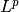

lp_discr¶
Lebesgue L^p type discretizations of function spaces.
Classes
DiscreteLp(fspace, partition, tspace[, interp]) |
Discretization of a Lebesgue  space. |
DiscreteLpElement(space, tensor) |
Representation of a DiscreteLp element. |
Functions
discr_sequence_space(shape[, dtype, impl]) |
Return an object mimicing the sequence space l^p(R^d). |
uniform_discr(min_pt, max_pt, shape[, …]) |
Return a uniformly discretized L^p function space. |
uniform_discr_fromdiscr(discr[, min_pt, …]) |
Return a discretization based on an existing one. |
uniform_discr_fromintv(intv_prod, shape[, …]) |
Return a uniformly discretized L^p function space. |
uniform_discr_frompartition(partition[, …]) |
Return a uniformly discretized L^p function space. |
uniform_discr_fromspace(fspace, shape[, …]) |
Return a uniformly discretized L^p function space. |